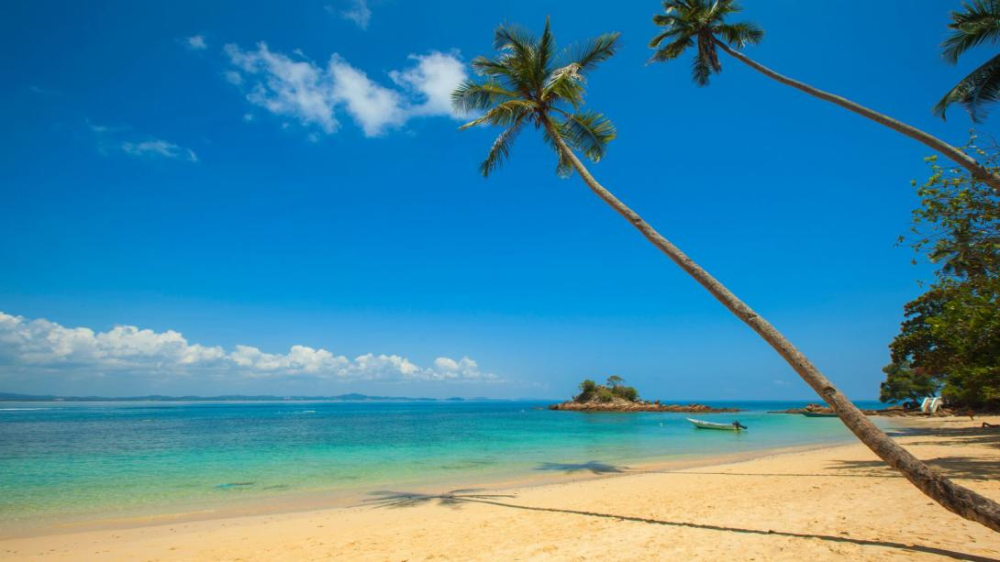

Interesting Destination in Pahang: Tioman Island
Tioman Island, located off the east coast of Pahang, Malaysia, is a tropical gem renowned for its crystal-clear waters, stunning coral reefs, and lush rainforest greenery. It has been recognized as one of the most beautiful islands in the world, making it a perfect destination for nature lovers and water activity enthusiasts.
According to local legend, Tioman Island is the resting place of a dragon princess who was on her way to Singapore. Enchanted by the beauty of the place, she decided to stay and transformed herself into an island.
APopular Activities on Tioman Island:
- Snorkeling and Diving: Explore the rich marine life and vibrant coral reefs at renowned dive sites such as Renggis Island, Coral Island (Pulau Tulai), and Chebeh..
- Rainforest Trekking: Embark on an adventurous hike through dense jungle trails to waterfalls like Asah Waterfall, or visit local villages such as Juara and Salang.
- Beach Hopping: Relax on serene beaches like Salang Beach, Juara Beach, or Tekek Beach, each offering its own unique atmosphere.
- Turtle Conservation Centre: Visit the Juara Turtle Project at Juara Beach to learn about sea turtle conservation efforts.
- Fishing: Join a fishing tour for an exciting deep-sea fishing experience..
Travel Preparation:
Tioman Island is accessible by ferry from Mersing or Tanjung Gemok. The best time to visit is between March and October, when the weather is sunnier and the sea is calmer—ideal for water activities. The monsoon season typically occurs from November to February.
Whether you're seeking a peaceful getaway, an exciting underwater adventure, or a deep connection with nature, Tioman Island promises unforgettable and lasting memories.